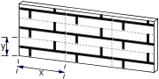
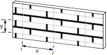
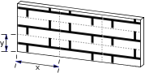
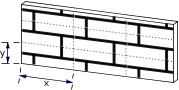
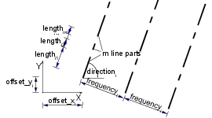
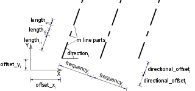
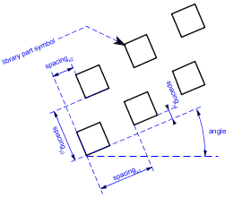

In the first part of this chapter, directives influencing the interpretation of GDL statements are presented.
Directives may define the smoothness used for cylindrical elements, representation mode in the 3D view or the assignment of an attribute
(color, material, text style, etc.) for the subsequent shapes.
Inline attribute definition is covered in the second part.
This feature allows you to assign to your objects customized materials, textures, fill patterns, line types and text styles
that are not present in the current attribute set of your project.
The influence of directives on the interpretation of the subsequent GDL statements remains in effect until the next directive or the end of the script.
Called scripts inherit the current settings: the changes have local influence. Returning from the script resets the settings as they were before the macro call.
Directives for 3D and 2D Scripts
LET
[LET] varnam = n
Value assignment. The LET directive is optional. The variable will store the evaluated value of n.
RADIUS
RADIUS radius_min, radius_max
Sets smoothness for cylindrical elements and arcs in polylines.
A circle with a radius of r is represented:
if r < radius_min, by a hexagon,
if r >= radius_max, by a 36-edged polygon,
if radius_min < r < radius_max, by a polygon of
(6+30*(r-radius_min)/(radius_max-radius_min)) edges.
Arc conversion is proportional to this.
After a RADIUS statement, all previous RESOL and TOLER
statements lose their effect.
r_min <= r_max
RESOL
RESOL n
Sets smoothness for cylindrical elements and arcs in polylines. Circles are converted to regular polygons having n sides.
Arc conversion is proportional to this.
After a RESOL statement, any previous RADIUS and TOLER statements lose their effect.
n >= 3
Default:
RESOL 36
TOLER
TOLER d
Sets smoothness for cylindrical elements and arcs in polylines.
The error of the arc approximation (i.e., the greatest distance between the theoretical arc and the generated chord) will be smaller than d.
After a TOLER statement, any previous RADIUS and RESOL statements lose their effect.
Note
The RADIUS, RESOL and TOLER directives set smoothness for cylindrical 3D elements
(CIRCLE, ARC, CYLIND, SPHERE, ELLIPS, CONE, ARMC, ARME, ELBOW, REVOLVE) and arcs in 2D polylines using curved edges.
See the section called “Additional Status Codes”.
PEN
PEN n
Sets the color.
0 < n <= 255
Default:
PEN 1
if there is no PEN statement in the script.
(For library parts, default values come from the library part’s settings.
If the script refers to a non-existing index, PEN 1 becomes the default setting.)
LINE_PROPERTY
LINE_PROPERTY expr
Defines the property for all subsequently generated lines in the 2D script (RECT2, LINE2,
ARC2, CIRCLE2,
SPLINE2, SPLINE2A,
POLY2, FRAGMENT2 commands)
until the next LINE_PROPERTY statement. Default value is generic.
expr: possible values:
0: all lines are generic lines,
1: all lines are inner,
2: all lines are contour.
[SET] STYLE
[SET] STYLE name_string
[SET] STYLE index
All the texts generated afterwards will use that style until the next SET STYLE statement.
The index is a constant referring to a style stack in the internal data structure
(negative indices mean indices in the data structure of inline materials (previously defined in the GDL script)).
This stack is modified during GDL analysis and can also be modified from within the program.
The use of the index instead of the style name is only recommended with the prior use of the IND function.
Default:
SET STYLE 0
(application font, size 5 mm, anchor = 1, normal face) if there is no SET STYLE statement in the script.
Directives Used in 3D Scripts Only
MODEL
MODEL WIRE
MODEL SURFACE
MODEL SOLID
Sets the representation mode in the current script.
MODEL WIRE: only wireframe, no surfaces or volumes. Objects are transparent.
MODEL SURFACE, MODEL SOLID: The generation of the section surfaces is based on the relation of the boundary surfaces,
so that both methods generate the same 3D internal data structure. Objects are opaque.
The only distinction can be seen after cutting away a part of the body:
MODEL SURFACE: the inside of bodies will be visible,
MODEL SOLID: new surfaces may appear.
Default:
MODEL SOLID
Example:
To illustrate the three modeling methods, consider the following three blocks:
MODEL WIRE
BLOCK 3,2,1
ADDY 4
MODEL SURFACE
BLOCK 3,2,1
ADDY 4
MODEL SOLID
BLOCK 3,2,1
After cutting them with a plane:
[SET] MATERIAL
[SET] MATERIAL name_or_index
All the surfaces generated afterwards will represent that material until the next MATERIAL statement.
Surfaces in the
BPRISM_,
CPRISM_,
FPRISM_,
HPRISM_,
SPRISM_,
CSLAB_,
CWALL_,
BWALL_,
XWALL_,
CROOF_,
MASS,
bodies are exceptions to this rule.
The index is a constant referring to a material stack in the internal data structure
(negative indices mean indices in the data structure of inline materials (previously defined in the GDL script)).
This stack is modified during GDL analysis and can also be modified from within the program.
The use of the index instead of the material name is only recommended with the prior use of the IND function.
index 0 has a special meaning: surfaces use the color of the current pen and they have a matte appearance.
Default:
MATERIAL 0
if there is no MATERIAL statement in the script.
(For Library parts, default values are read from the Library part’s settings.
If the script refers to a non-existing index, MATERIAL 0 becomes the default setting.)
[SET] BUILDING_MATERIAL
[SET] BUILDING_MATERIAL name_or_index
[, cut_fill_pen [, cut_fill_bkgd_pen, [iOverrideFlag]]]
Compatibility: introduced in Archicad 21.
All the shapes generated afterwards will represent the surface, cut fill type (in Section/Elevation), foreground and background pens of the set building material.
cut_fill_pen: custom cut fill foreground pen index to override the index of the active building material attribute
cut_fill_bkgd_pen: custom cut fill background pen index to override the index of the active building material attribute
iOverrideFlag:
enable "cut_fill_pen" and/or "cut_fill_bkgd_pen" to take effect
iOverrideFlag = j1 + 2*j2: , where each j can be 0 or 1.
j1: Override cut fill foreground pen with cut_fill_pen
j2: Override cut fill background pen with cut_fill_bkgd_pen
Override parameters are optional: if the "iOverrideFlag" is not set, or the DEFAULT keyword is used in any of the override pen index parameters, the building material attributes will take effect.
Example:
Overriding the cut fill background pen
BUILDING_MATERIAL buildingMatIndex, DEFAULT, cut_fill_bkgd_pen
All the surfaces generated afterwards will represent the surface of the building material until the next
BUILDING_MATERIAL, MATERIAL, SECT_FILL or SECT_ATTRS statement.
Surfaces in the
BPRISM_,
CPRISM_,
FPRISM_,
HPRISM_,
SPRISM_,
CSLAB_,
CWALL_,
BWALL_,
XWALL_,
CROOF_,
MASS,
bodies are exceptions to this rule.
In Section/Elevation, the displayed cut fill foreground and background pens will match the same attributes of the building material (or the override parameters set in the command itself),
until the next BUILDING_MATERIAL, MATERIAL, SECT_FILL or SECT_ATTRS statement.
A previous BUILDING_MATERIAL statement has no further control of shapes generated after using SECT_FILL or SECT_ATTRS statements.
Shapes generated after using the following statements keep their BUILDING_MATERIAL settings:
the MATERIAL statement overrides only the surfaces of the generated shape,
the SECT_ATTRS{2} statement controls the representation of the contour pen and line type in section view only,
while the rest of the attributes are still controlled the building material itself.
The index is a constant referring to a building material stack in the internal data structure.
The use of the index instead of the building material name is only recommended with the prior use of the IND function.
index 0 has a special meaning: the generated section eliminates the lines based on the fills.
Default:
BUILDING_MATERIAL 0
if there is no BUILDING_MATERIAL statement in the script.
(For Library parts, default values are read from the Library part’s settings.
If the script refers to a non-existing index, BUILDING_MATERIAL 0 becomes the default setting.)
SECT_FILL
SECT_FILL fill, fill_background_pen,
fill_pen, contour_pen
or
SECT_ATTRS
SECT_ATTRS fill, fill_background_pen,
fill_pen, contour_pen [, line_type]
Defines the attributes used for the cut part of the 3D elements in the Section/Elevation window.
Compatibility: up to Archicad 19 the PROJECT2{3} command is affected too.
Inline fill and line_type attributes (defined in master script or 3d script) are not accepted.
fill: fill name or index number.
fill_background_pen: fill background pencolor number.
fill_pen: fill pencolor number.
contour_pen: fill contour pencolor number.
line_type: line type of polygon edges.
SECT_ATTRS{2}
SECT_ATTRS{2} contour_pen [, line_type]
Compatibility: introduced in Archicad 21.
Defines the contour pen and line type used for the cut part of the 3D elements in Section/Elevation.
Can be combined with BUILDING_MATERIAL statement for handling all of the Section/Elevation attributes.
Inline line_type attribute (defined in master script or 3d script) is not accepted.
contour_pen: fill contour pencolor number.
line_type: line type of polygon edges.
SHADOW
SHADOW casting [, catching]
Controls the shadow casting of the elements in
PhotoRendering and in vectorial shadow casting.
casting: ON, AUTO or OFF
ON: all the subsequent elements will cast shadows in all circumstances,
OFF: none of the subsequent elements will cast shadows in any circumstance,
AUTO: shadow casting will be determined automatically
Setting SHADOW OFF for hidden parts will spare memory space and processing time.
Setting SHADOW ON ensures that even tiny details will cast shadows.
catching: ON or OFF
This optional parameter controls the appearance of shadows (from other bodies) on surfaces.
If shadow casting isn't specified, the default will be AUTO.
Directives Used in 2D Scripts Only
DRAWINDEX
DRAWINDEX number
Defines the drawing order of 2D Script elements. Elements with a smaller drawindex will be drawn first.
0 < number <= 50
(In the current version of GDL only the 10, 20, 30, 40 and 50 DRAWINDEX values are valid. Other values will be rounded to these.)
If no DRAWINDEX directive is present, the default drawing order is the following:
1 Figures
2 Fills
3 Lines
4 Text elements
[SET] FILL
[SET] FILL name_string
[SET] FILL index
All the 2D polygons generated afterwards will represent that fill until the next SET FILL statement.
The index is a constant referring to a fill stack in the internal data structure.
This stack is modified during GDL analysis and can also be modified from within the program.
The use of the index instead of the fill name is only recommended with the prior use of the IND function.
Default:
SET FILL 0
i.e., empty fill, if there is no SET FILL statement in the script.
[SET] LINE_TYPE
[SET] LINE_TYPE name_string
[SET] LINE_TYPE index
All the 2D lines generated afterwards will represent that line type (in lines, arcs, polylines) until the next SET LINE_TYPE statement.
The index is a constant that refers to a line type stack in the internal data structure.
This stack is modified during GDL analysis and can also be modified from the program.
The use of the index instead of the line type name is only recommended with the prior use of the IND function.
Default:
SET LINE_TYPE 1
i.e., solid line, if there is no SET LINE_TYPE statement in the script.
Inline Attribute Definition
Attributes in can be created using the material, fill and line type dialog boxes.
These floor plan attributes can be referenced from any GDL script. Attributes can also be defined in GDL scripts. There are two different cases:
Attribute definition in the MASTER_GDL script. The MASTER_GDL script is interpreted when the library that contains it is loaded in the memory.
The MASTER_GDL attributes are merged into the floor plan attributes; attributes with the same names are not replaced.
Once the MASTER_GDL is loaded, the attributes defined in it can be referenced from any script.
Attribute definition in library parts. The materials and textures defined this way can be used in the script and its second generation scripts.
Fills and line types defined and used in the master or 2D script have the same behavior as if they were defined in the MASTER_GDL script, but only if used by name or index (not through a parameter).
Fills and line types defined in the master or 3D script can't be accessed in the 3D script.
The Check GDL Script command in the script window helps to verify whether the material, fill, line type or style parameters are correct.
When a material, fill, line type or style is different in the 3D interpretation of the library part from the intended one,
but there is no error message, this probably means that one or more of the parameter values are incorrect.
The Check GDL Scripts command will help you with detailed messages to find these parameters.
DEFINE MATERIAL
DEFINE MATERIAL name type,
surface_red, surface_green, surface_blue
[, ambient_ce, diffuse_ce, specular_ce, transparent_ce,
shining, transparency_attenuation
[, specular_red, specular_green, specular_blue,
emission_red, emission_green, emission_blue, emission_att]]
[, fill_index [, fillcolor_index, texture_index]]
Note
This command can contain additional data definition.
See the section called “Additional Data” for details.
Any GDL script can include material definitions prior to the first reference to that material name.
This material can only be used for 3D elements in its own script and its second generation scripts.
name: name of the material.
type:
type of the material. The actual number (n) of parameters that define the material is different, depending on the type.
The meaning of the parameters and their limits are explained in the examples’ comments.
0: general definition, n=16,
1: simple definition, n=9 (extra parameters are constants or calculated from given values),
2-7:
predefined material types, n=3.
The three values are the RGB components of the surface color. Other parameters are constants or calculated from the color.
2: matte,
3: metal,
4: plastic,
5: glass,
6: glowing,
7: constant,
10: general definition with fill parameter, n=17,
11: simple definition with fill parameter, n=10,
12-17: predefined material types with fill parameter, n=4,
20: general definition with fill, color index of fill and index of texture parameters, n=19,
21: simple definition with fill, color index of fill and index of texture parameters, n=12,
22-27: predefined material types with fill, color index of fill and index of texture parameters, n=6.
20-27:
Special meanings for types 20-27: If the pen number is zero, vectorial hatches will be generated with the active pen.
Zero value for a texture or fill index allows you to define materials without a vectorial hatch or texture.
Example 1:
Materials with solid colors
DEFINE MATERIAL "water" 0,
0.5284, 0.5989, 0.6167,! surface RGB [0.0..1.0]
1.0, ! ambient coefficient [0.0..1.0]
0.5, ! diffuse coefficient [0.0..1.0]
0.5, ! specular coeff. [0.0..1.0]
0.9, ! transparent coeff. [0.0..1.0]
2.0, ! shining [0.0..100.0]
1, ! transparency atten. [0.0..4.0]
0.5284, 0.5989, 0.6167,! specular RGB [0.0..1.0]
0, 0, 0, ! emission RGB [0.0..1.0]
0.0 ! emission atten. [0.0..65.5]DEFINE MATERIAL "asphalt" 1,
0.1995, 0.2023, 0.2418,! surface RGB [0.0..1.0]
1.0, 1.0, 0.0, 0.0,
! ambient, diffuse, specular, transparent
! coefficients [0.0..1.0]
0, ! shining [0..100]
0 ! transparency attenuation [0..4]DEFINE MATERIAL "matte red" 2,
1.0, 0.0, 0.0 ! surface RGB [0.0..1.0]Example 2:
Material with fill
DEFINE MATERIAL "Brick-Red" 10,
0.878294, 0.398199, 0.109468,
0.58, 0.85, 0.0, 0.0,
0,
0.0,
0.878401, 0.513481, 0.412253,
0.0, 0.0, 0.0,
0,
IND(FILL, "common brick") ! fill indexExample 3:
Material with fill and texture
DEFINE MATERIAL "Yellow Brick+*" 20,
1, 1, 0, ! surface RGB [0.0 .. 1.0]
0.58, 0.85, 0, 0,
! ambient, diffuse, specular, transparent
! coefficients [0.0 .. 1.0]
0, ! shining [0.0 .. 100.0]
0, ! transparency attenuation [0.0 .. 4.0]
0.878401, 0.513481, 0.412253, ! specular RGB [0.0 .. 1.0]
0, 0, 0, ! emission RGB [0.0 .. 1.0]
0, ! emission attenuation [0.0 .. 65.5]
IND(FILL, "common brick"), 61,
IND(TEXTURE, "Brick")
! Fill index, color index, texture indexDEFINE MATERIAL BASED_ON
DEFINE MATERIAL name [,] BASED_ON orig_name [,] PARAMETERS name1 = expr1 [, ...]
[[,] ADDITIONAL_DATA name1 = expr1 [, ...]]
Material definition based on an existing material.
Specified parameters of the original material will be overwritten by the new values, other parameters remain untouched.
Using the command without actual parameters results in a material exactly the same as the original, but with a different name.
Parameter values of a material can be obtained using the "MATERIAL_INFO" REQUEST.
orig_name: name of the original material (name of an existing, previously defined GDL or floor plan material).
namei: material parameter name to be overwritten by a new value. Names corresponding to parameters of material definition:
gs_mat_surface_r, gs_mat_surface_g, gs_mat_surface_b: (surface RGB [0.0..1.0])
gs_mat_ambient: (ambient coefficient [0.0..1.0])
gs_mat_diffuse: (diffuse coefficient [0.0..1.0])
gs_mat_specular: (specular coefficient [0.0..1.0])
gs_mat_transparent: (transparent coefficient [0.0..1.0])
gs_mat_shining: (shininess [0.0..100.0])
gs_mat_transp_att: (transparency attenuation [0.0..4.0])
gs_mat_specular_r, gs_mat_specular_g, gs_mat_specular_b: (specular color RGB [0.0..1.0])
gs_mat_emission_r, gs_mat_emission_g, gs_mat_emission_b: (emission color RGB [0.0..1.0])
gs_mat_emission_att: (emission attenuation [0.0..65.5])
gs_mat_fill_ind: (fill index)
gs_mat_fillcolor_ind: (fill color index)
gs_mat_texture_ind: (texture index)
expri: new value to overwrite the specified parameter of the material. Value ranges are the same as at the material definition.
Example:
n = REQUEST{2} ("MATERIAL_INFO", "Brick-Face", "gs_mat_emission_rgb",
em_r, em_g, em_b)
em_r = em_r + (1 - em_r) / 3
em_g = em_g + (1 - em_g) / 3
em_b = em_b + (1 - em_b) / 3
DEFINE MATERIAL "Brick-Face light" [,] BASED_ON "Brick-Face" \
PARAMETERS gs_mat_emission_r = em_r,
gs_mat_emission_g = em_g, gs_mat_emission_b = em_b
SET MATERIAL "Brick-Face"
BRICK a, b, zzyzx
ADDX a
SET MATERIAL "Brick-Face light"
BRICK a, b, zzyzxDEFINE TEXTURE
DEFINE TEXTURE name expression, x, y, mask, angle
Any GDL script can include texture definition prior to the first reference to that texture name.
The texture can be used only in the script in which it was defined and its subsequent second generation scripts.
name: name of the texture.
expression:
picture associated with the texture.
A string expression means a file name, a numerical expression an index of a picture stored in the library part.
A 0 index is a special value which refers to the preview picture of the library part.
x: logical width of the texture.
y: logical height of the texture.
mask:
mask = j1 + 2*j2 + 4*j3 + 8*j4 + 16*j5 + 32*j6 + 64*j7 + 128*j8 + 256*j9, where each j can be 0 or 1.
Alpha channel controls (j1... j6):
j1: alpha channel changes the transparency of texture,
j2:
Bump mapping or surface normal perturbation.
Bump mapping uses the alpha channel to determine the amplitude of the surface normal,
j3: alpha channel changes the diffuse color of texture,
j4: alpha channel changes the specular color of texture,
j5: alpha channel changes the ambient color of texture,
j6: alpha channel changes the surface color of texture,
Connection controls (j7... j9): (If the value is zero, normal mode is selected.)

j7: the texture will be shifted randomly,

j8: mirroring in x direction,

j9: mirroring in y direction.

angle: angle of the rotation.
Example:
DEFINE TEXTURE "Brick" "Brick.PICT", 1.35, 0.3, 256+128, 35.0
DEFINE FILL
DEFINE FILL name [[,] FILLTYPES_MASK fill_types,]
pattern1, pattern2, pattern3, pattern4,
pattern5, pattern6, pattern7, pattern8,
spacing, angle, n,
frequency1, direction1, offset_x1, offset_y1, m1,
length11, ..., length1m,
...
frequencyn, directionn, offset_xn,
lengthn1, ..., lengthnm
Note
This command can contain additional data definition.
See the section called “Additional Data” for details.
Any GDL script may include fill definitions prior to the first reference to that fill name.
The fill defined this way can be used only for 2D elements in the script in which it was defined and its subsequent second generation-scripts.

fill_types:
fill_types = j1 + 2*j2 + 4*j3, where each j can be 0 or 1.
j1: cut fills,
j2: cover fills,
j3: drafting fills.
If the j bit is set, the defined fill can be used corresponding to its specified type. Default is all fills (0).
pattern definition: pattern1, pattern2, pattern3, pattern4, pattern5, pattern6, pattern7, pattern8:
8 numbers between 0 and 255 representing binary values. Defines the bitmap pattern of the fill.
spacing:
hatch spacing - defines a global scaling factor for the whole fill.
All values will be multiplied by this number in both the x and y direction.
angle: global rotation angle in degrees.
n: number of hatch lines.
frequencyi: frequency of the line (the distance between two lines is spacing * frequencyi).
diri: direction angle of the line in degrees.
offset_xi, offset_yi: offset of the line from the origin.
mi: number of line parts.
lengthij:
length of the line parts (the real length is spacing * lengthij). Line parts are segments and spaces following each other.
First line part is a segment, zero length means a dot.
The bitmap pattern is only defined by the pattern1... pattern8 parameters and is used when the display options for Polygon Fills are set
to "Bitmap Pattern". To define it, choose the smallest unit of the fill, and represent it as dots and empty spaces using a rectangular grid with 8x8 locations.
The 8 pattern parameters are decimal representations of the binary values in the lines of the grid (a dot is 1, an empty space is 0).
The vectorial hatch is defined by the second part of the fill definition as a collection of dashed lines repeated with a given frequency (frequencyi).
Each line of the collection is described by its direction (directioni), its offset from the origin (offset_xi, offset_yi)
and the dashed line definition which contains segments and spaces with the given length (lengthij) following each other.
Note
Only simple fills can be defined with the DEFINE FILL command.
There is no possibility to define symbol fills with this command.
Example:
DEFINE FILL "brick" 85, 255, 136, 255,
34, 255, 136, 255,
0.08333, 0.0, 4,
1.0, 0.0, 0.0, 0.0, 0,
3.0, 90.0, 0.0, 0.0, 2,
1.0, 1.0,
3.0, 90.0, 1.5, 1.0, 4,
1.0, 3.0, 1.0, 1.0,
1.5, 90.0, 0.75, 3.0, 2,
1.0, 5.0Bitmap pattern:
Pattern: Binary value:
pattern1 = 85 01010101 • • • •
pattern2 = 255 11111111 ••••••••
pattern3 = 136 10001000 • •
pattern4 = 255 11111111 ••••••••
pattern5 = 34 00100010 • •
pattern6 = 255 11111111 ••••••••
pattern7 = 136 10001000 • •
pattern8 = 255 11111111 ••••••••
DEFINE FILLA
DEFINE FILLA name [,] [FILLTYPES_MASK fill_types,]
pattern1, pattern2, pattern3, pattern4,
pattern5, pattern6, pattern7, pattern8,
spacing_x, spacing_y, angle, n,
frequency1, directional_offset1, direction1,
offset_x1, offset_y1, m1,
length11, ..., length1m,
...
frequencyn, directional_offsetn, directionn,
offset_xn, offset_yn, mn,
lengthn1, ..., lengthnm
Note
This command can contain additional data definition.
See the section called “Additional Data” for details.

An extended DEFINE FILL statement.
spacing_x, spacing_y:
spacing factor in the x and y direction, respectively.
These two parameters define a global scaling factor for the whole fill.
All values in the x direction will be multiplied by spacing_x and all values in the y direction will be multiplied by spacing_y.
directional_offseti:
the offset of the beginning of the next similar hatch line, measured along the line’s direction.
Each line of the series will be drawn at a distance defined by frequencyi with an offset defined by directional_offseti.
The real length of the offset will be modulated by the defined spacing.
Example:
DEFINE FILLA "TEST" 8, 142, 128, 232,
8, 142, 128, 232,
0.5, 0.5, 0, 2,
2, 1, 90, 0,
0, 2, 1, 1,
1, 2, 0, 0, 0,
2, 1, 3
FILL "TEST"
POLY2 4, 6,
-0.5, -0.5, 12, -0.5,
12, 6, -0.5, 6Bitmap pattern:
Pattern: Binary value:
pat1 = 8 00001000 •
pat2 = 142 10001110 • •••
pat3 = 128 10000000 •
pat4 = 232 11101000 ••• •
pat5 = 8 00001000 •
pat6 = 142 10001110 • •••
pat7 = 128 10000000 •
pat8 = 232 11101000 ••• •
DEFINE SYMBOL_FILL
DEFINE SYMBOL_FILL name [,][FILLTYPES_MASK fill_types,]
pat1, pat2, pat3, pat4, pat5, pat6, pat7, pat8,
spacingx1, spacingy1, spacingx2, spacingy2,
angle, scaling1, scaling2, macro_name [,] PARAMETERS [name1
= value1, ..., namen = valuen]
Note
This command can contain additional data definition.
See the section called “Additional Data” for details.

An extended DEFINE FILL statement, which allows you to include a library part drawing in a fill definition.
The usage of macro_name and the parameters are the same as for the CALL command.
spacingx1, spacingx2: horizontal spacings.
spacingy1, spacingy2: vertical spacings.
scaling1: horizontal scale.
scaling2: vertical scale.
macro_name: the name of the library part.
DEFINE SOLID_FILL
DEFINE SOLID_FILL name [[,] FILLTYPES_MASK fill_types]
Defines a solid fill.
Note
This command can contain additional data definition.
See the section called “Additional Data” for details.
DEFINE EMPTY_FILL
DEFINE EMPTY_FILL name [[,] FILLTYPES_MASK fill_types]
Defines an empty fill.
Note
This command can contain additional data definition.
See the section called “Additional Data” for details.
DEFINE LINEAR_GRADIENT_FILL
DEFINE LINEAR_GRADIENT_FILL name [[,] FILLTYPES_MASK fill_types]
Define linear gradient fill.
DEFINE RADIAL_GRADIENT_FILL
DEFINE RADIAL_GRADIENT_FILL name [[,] FILLTYPES_MASK fill_types]
Define radial gradient fill.
DEFINE TRANSLUCENT_FILL
DEFINE TRANSLUCENT_FILL name [[,] FILLTYPES_MASK fill_types]
pat1, pat2, pat3, pat4, pat5, pat6, pat7, pat8,
percentage
Define a fill, which shows the background and foreground colors in mixture defined by the given percentage value.
percentage:
percentage of foreground color opacity;
0 displays background color only (like empty fill), 100 displays the foreground color only (like solid fill).
DEFINE IMAGE_FILL
DEFINE IMAGE_FILL name image_name [[,] FILLTYPES_MASK fill_types]
part1, part2, part3, part4, part5, part6, part7, part8,
image_vert_size, image_hor_size, image_mask, image_rotangle
Define a fill based on an image pattern.
image_name: name of the pattern image loaded in the current library.
image_vert_size, image_hor_size: model size of the pattern.
image_mask: tiling directive
image_mask = 1024*j11 + 2048*j12, where each j can be 0 or 1.
For more information about laying out images on a surface see the DEFINE TEXTURE command.
j11: mirroring in x direction
j12: mirroring in y direction
image_rotangle: rotation angle of the pattern from the normal coordinate system.
DEFINE LINE_TYPE
DEFINE LINE_TYPE name spacing, n,
length1, ..., lengthn
Note
This command can contain additional data definition.
See the section called “Additional Data” for details.
Any GDL script may include line type definitions prior to the first reference to that line-type name.
The line type defined this way can be used only for 2D elements in the script in which it was defined and its subsequent second generation scripts.
name: name of the line type.
n: number of the line parts.
lengthi:
length of the line parts (the real length is spacing * lengthi). Line parts consist of segments and spaces.
First line part is a segment, zero length means a dot.
Note
Only simple line types - i.e. consisting only of segments and spaces - can be defined
with this command, defining symbol line types can be done with
the DEFINE SYMBOL_LINE command.
Example:
DEFINE LINE_TYPE "line - - ." 1,
6, 0.005, 0.002, 0.001, 0.002, 0.0, 0.002DEFINE SYMBOL_LINE
DEFINE SYMBOL_LINE name dash, gap, macro_name PARAMETERS [name1 = value1,
...
namen = valuen]
Note
This command can contain additional data definition.
See the section called “Additional Data” for details.
An extended DEFINE LINE statement, which allows you to include a library part drawing in a line definition.
The usage of macro_name and the parameters are the same as for the CALL command.
dash: scale of both line components.
gap: gap between each component.
Text Styles and Text Blocks
DEFINE STYLE
DEFINE STYLE name font_family, size, anchor, face_code
Recommended to be used with the TEXT2 and TEXT commands.
GDL scripts may include style definitions prior to the first reference to that style name.
The style defined this way can be used only in the script in which it was defined and its subsequent second generation scripts.
font_family: name of the used font family (e.g., Garamond).
size: height of the "l" character in millimeters in paper space or meters in model space.
If the defined style is used with the TEXT2 and TEXT commands, size means character heights in millimeters.
If used with PARAGRAPH strings in the RICHTEXT2 and RICHTEXT commands,
size meaning millimeters or meters depends on the fixed_height parameter of the TEXTBLOCK definition,
while the outline and shadow face_code values and the anchor values are not effective.
anchor: code of the position point in the text.
face_code: a combination of the following values:
face_code = j1 + 2*j2 + 4*j3, where each j can be 0 or 1.
j1: bold,
j2: italic,
j3: underline,
If face_code = 0, then style is normal.
DEFINE STYLE{2}
DEFINE STYLE{2} name font_family, size, face_code
New version of style definition, recommended to be used with PARAGRAPH definitions.
font_family: name of the used font family (e.g., Garamond).
size: height of the characters in mm or m in model space.
face_code: a combination of the following values:
face_code = j1 + 2*j2 + 4*j3 + 32*j6 + 64*j7 + 128*j8, where each j can be 0 or 1.
j1: bold,
j2: italic,
j3: underline,
j6: superscript,
j7: subscript,
j8: strikethrough.
If face_code = 0, then style is normal.
If the defined style is used with the TEXT2 command, size means character heights in millimeters,
while the superscript, subscript and strikethrough face_code values are not effective.
If used with PARAGRAPH strings in the RICHTEXT2 and RICHTEXT commands,
size meaning millimeters or meters depends on the fixed_height parameter of the TEXTBLOCK definition.
PARAGRAPH
PARAGRAPH name alignment, firstline_indent,
left_indent, right_indent, line_spacing [,
tab_position1, ...]
[PEN index]
[[SET] STYLE style1]
[[SET] MATERIAL index]
'string1'
'string2'
...
'string n'
[PEN index]
[[SET] STYLE style2]
[[SET] MATERIAL index]
'string1'
'string2'
...
'string n'
...
ENDPARAGRAPH
GDL scripts may include paragraph definitions prior to the first reference to that paragraph name.
The paragraph defined this way can be used only in the script in which it was defined and its subsequent second generation scripts.
A paragraph is defined to be a sequence of an arbitrary number of strings (max 256 characters long each) with different attributes:
style, pen and material (3D).
If no attributes are specified inside the paragraph definition, actual (or default) attributes are used.
The new lines included in a paragraph string (using the special character '\n') will automatically split the string
into identical paragraphs, each containing one line.
Paragraph definitions can be referenced by name in the TEXTBLOCK command.
All length type parameters (firstline_indent, left_indent, right_indent, tab_position) meaning millimeters or meters
depends on the fixed_height parameter of the TEXTBLOCK definition.
name:
name of the paragraph. Can be either string or integer.
Integer identifiers works only with
the TEXTBLOCK_ command
alignment: alignment of the paragraph strings. Possible values:
1: left aligned,
2: center aligned,
3: right aligned,
4: full justified.
firstline_indent: first line indentation, in mm or m in model space.
left_indent: left indentation, in mm or m in model space.
right_indent: right indentation, in mm or m in model space.
line_spacing:
line spacing factor. The default distance between the lines (character size + distance to the next line)
defined by the actual style will be multiplied by this number.
tab_positioni:
consecutive tabulator positions (each relative to the beginning of the paragraph), in mm or m in model space.
Tabulators in the paragraph strings will snap to these positions.
If no tabulator positions are specified, default values are used (12.7 mm).
Works only with '\t' special character.
stringi:
part of the text. Can be either constant string or string type parameter.
TEXTBLOCK
TEXTBLOCK name width, anchor, angle, width_factor, charspace_factor, fixed_height,
'string_expr1' [, 'string_expr2', ...]
Textblock definition. GDL scripts may include textblock definitions prior to the first reference to that textblock name.
The textblock defined this way can be used only in the script in which it was defined and its subsequent second generation scripts.
A textblock is defined to be a sequence of an arbitrary number of strings or paragraphs which can be placed
using the RICHTEXT2 command and the RICHTEXT command.
Use the "TEXTBLOCK_INFO" REQUEST to obtain information on the calculated width and height of a textblock.
name: name of the textblock, string type value.
width: textblock width in mm or m in model space, if 0 it is calculated automatically.
anchor: code of the position point in the text.
angle: rotation angle of the textblock in degrees.
width_factor: Character widths defined by the actual style will be multiplied by this number.
charspace_factor: The horizontal distance between two characters will be multiplied by this number.
fixed_height: Possible values:
1: the placed TEXTBLOCK will be scale-independent and all specified length type parameters will mean millimeters,
0: the placed TEXTBLOCK will be scale-dependent and all specified length type parameters will mean meters in model space.
string_expri: means paragraph name if it was previously defined, simple string otherwise (with default paragraph parameters).
TEXTBLOCK_
TEXTBLOCK_ name width, anchor, angle, width_factor, charspace_factor, fixed_height, n,
'expr_1' [, 'expr_2', ..., 'expr_n']
Similar to the TEXTBLOCK command.
The meaning of all the parameters are the same, with the following additions:
expr_i: paragraph names can be either string or integer types within one textblock.
n: number of listed expr_i names
Attribute definitions can contain optional additional data definitions after the ADDITIONAL_DATA keyword.
The additional data must be entered after the previously defined parameters of the attribute command.
An additional data has a name (namei) and a value (valuei), which can be an expression of any type, even an array.
If a string parameter name ends with the substring "_file", its value is considered to be a file name and will be included in the archive project.
Different meanings of additional data can be defined and used by the executing application.
Additional data definition is available in the following commands:
DEFINE MATERIAL parameters [[,] ADDITIONAL_DATA name1 = value1, name2 = value2, ...]
DEFINE MATERIAL name [,] BASED_ON orig_name [,] PARAMETERS name1 = expr1 [, ...]
[[,] ADDITIONAL_DATA name1 = expr1 [, ...]]DEFINE FILL parameters [[,] ADDITIONAL_DATA name1 = value1, name2 = value2, ...]
DEFINE FILLA parameters [[,] ADDITIONAL_DATA name1 = value1, name2 = value2, ...]
DEFINE SYMBOL_FILL parameters
[[,] ADDITIONAL_DATA name1 = value1, name2 = value2, ...]DEFINE SOLID_FILL name [[,] FILLTYPES_MASK fill_types]
[[,] ADDITIONAL_DATA name1 = value1, name2 = value2, ...]DEFINE EMPTY_FILL name [[,] FILLTYPES_MASK fill_types]
[[,] ADDITIONAL_DATA name1 = value1, name2 = value2, ...]DEFINE LINEAR_GRADIENT_FILL name [[,] FILLTYPES_MASK fill_types]
[[,] ADDITIONAL_DATA name1 = value1, name2 = value2, ...]DEFINE RADIAL_GRADIENT_FILL name [[,] FILLTYPES_MASK fill_types]
[[,] ADDITIONAL_DATA name1 = value1, name2 = value2, ...]DEFINE TRANSLUCENT_FILL name [[,] FILLTYPES_MASK fill_types]
pat1, pat2, pat3, pat4, pat5, pat6, pat7, pat8,
percentage [[,] ADDITIONAL_DATA name1 = value1, name2 = value2, ...]DEFINE IMAGE_FILL name image_name [[,] FILLTYPES_MASK fill_types]
part1, part2, part3, part4, part5, part6, part7, part8,
image_vert_size, image_hor_size, image_mask, image_rotangle
[[,] ADDITIONAL_DATA name1 = value1, name2 = value2, ...]DEFINE LINE_TYPE parameters [[,] ADDITIONAL_DATA name1 = value1, name2 = value2, ...]
DEFINE SYMBOL_LINE parameters
[[,] ADDITIONAL_DATA name1 = value1, name2 = value2, ...]